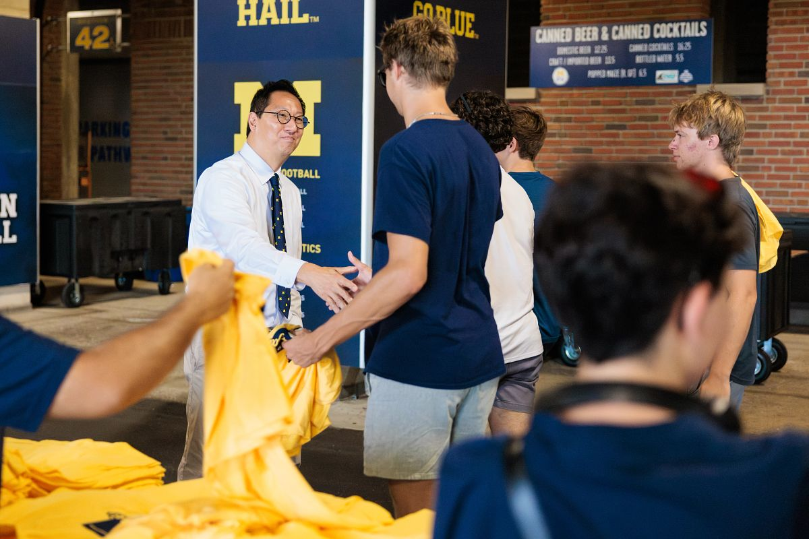
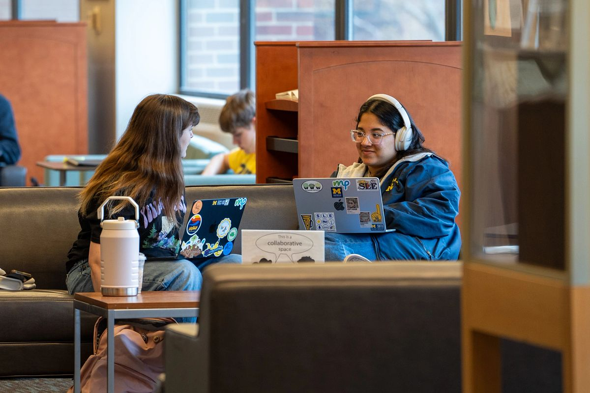
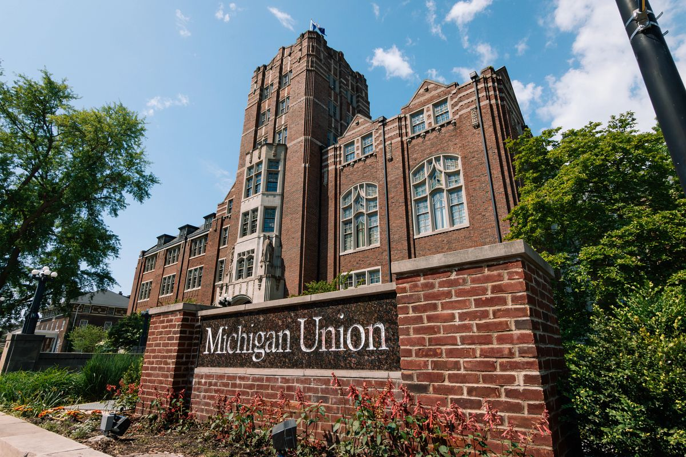

Counseling and Psychological Services (CAPS) is a comprehensive mental
health resource dedicated to supporting the University of Michigan
community.
The work of CAPS spans multiple critical areas: clinical
service delivery, prevention and education, mental health wellness,
research and data work, and training the next generation of mental
health professionals.
Core Objectives
The core objective of CAPS are to:
Provide high-quality clinical services to students
Develop and implement mental health prevention programs
Promote campus-wide mental health awareness
Conduct important research on student mental health
Train future mental health professionals
The ultimate goal of CAPS is to create a campus climate of mental
health where each student can engage thoughtfully as an active
community member and support their fellow students. CAPS believes in
a holistic approach that goes beyond individual treatment to foster
a supportive, connected, and engaged community.
Diversity and Inclusion Commitment

CAPS welcomes everyone!
CAPS is deeply committed to creating an inclusive environment that
respects and celebrates diversity. They recognize that mental health
support must be culturally sensitive and personalized. CAPS services
are designed to be accessible, respectful, and affirming for students
from all backgrounds, identities, and experiences.
CAPS Services
Individual Counseling

CAPS counseling services are one-on-one and tailored to your
unique needs.
The individual counseling services offered by CAPS provide a
confidential and supportive space for students to explore personal
challenges, develop coping strategies, and work through emotional
difficulties. Whether you're experiencing stress, anxiety,
depression, relationship issues, or academic pressure, CAPS offers
trained mental health professionals to support you.
Embedded Counseling Model
CAPS utilizes an innovative embedded counseling approach, which
means CAPS counselors are integrated into various campus
communities. This model allows for more targeted, contextualized
support that understands the specific challenges of different
student groups.
Peer Support and Community Resources
CAPS offers multiple peer support options, including Individual Peer
Counseling (IPC) and the Togetherall online platform. These
resources provide students with accessible, relatable support
channels that complement CAPS' professional counseling services.
Additional Support Initiatives
Group Therapy Sessions: Structured group
environments focusing on specific mental health themes
Wellness Coaching: Personalized strategies for
stress management and personal development
Mindfulness Resources: Guided meditation and stress
reduction techniques
Workshop and Training Programs: Educational
sessions on mental health and wellness
Training and Professional Development
CAPS is committed to training the next generation of mental health
professionals. They offer training programs, research opportunities,
and professional development resources for students interested in
mental health fields.
Contact Information and Hours

CAPS is headquartered in the Michigan Union, pictured above.
Location:Michigan Union
(530 South State Street, Ann Arbor, MI 48109) in Suite 4079